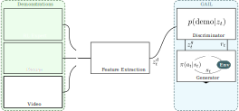

Humanoid Imitation Learning from Video
This post describes our experience implementing a system which learns movement skills for humanoid figures from imitation, and all of the supporting infrastructure and data processing necessary to do so. Our system employs a generative adversarial imitation learning (GAIL) architecture, which is a type of generative adversarial network. We successfully trained our GAIL to control a custom-designed humanoid skeleton, using expert demonstrations from an RL policy learned using that skeleton. We also explored several methods for deriving humanoid skeleton demonstrations from video data, developed a preprocessing pipeline for motion capture data. We hope to refine our system in the future to learn from motion capture data and directly from videos of human walking. Our system is a work-in-progress, which is the foundation for several possible future research projects.
Introduction to GAIL

Architecture diagram for our GAIL imitation learning system.
$$\min_{\theta} \mathrm{E}_{s,a \sim p(s,a)}[L(D_{\theta}(s,a), 1)] + \mathrm{E}_{z \sim q(z)}[L(D_{\theta}(G_{\phi}(z)), 0)]$$ $$\max_{\phi} \mathrm{E}_{z \sim q(z)}[L(D_{\theta}(G_{\phi}(z)), 0)]$$
Generative adversarial imitation learning (GAIL) is a deep neural network architecture for imitation learning, wherein an agent ("learner") learns a skill by observing the behavior of another agent ("expert"). It is based on the popular generative adversarial network (GAN) architecture, in which the network is divided into two principal functional blocks engaged in an adversarial game: the "discriminator" (or "critic") learns to distinguish real training examples from examples created by the network, while the "generator" (or "actor") block learns to produce convincing counterfeits of real examples meant to fool the discriminator. Those counterfeits are also the useful output of a well-trained network.
GAIL as Inverse Reinforcement Learning
Although GAIL does not use an explicit reward function to evaluate the generated policy, the discriminator does give a reward signal in some sense. As discussed in Finn et al
, a Generative Adversarial Network and by extension the GAIL method can be viewed as an Inverse Reinforcement Learning problem.
A key fact for applying GANs to imitation learning is that the generator is never exposed to real world training examples, only the discriminator. In GAIL, the discriminator learns to distinguish generated performances from expert demonstrations, while the generator attempts to mimic the expert convincingly-enough to fool the discriminator into thinking its performance was an expert demonstration. In our use of GAIL, the expert demonstrations are time-series humanoid motion traces from a variety of sources (motion capture, video, artificially-trained simulations), and the output of the generator is a policy (a function mapping from states $s$ to actions $a$) for moving a humanoid model in simulation to mimic those demonstrated motions.
The original GAIL formulation introduced by Ho et al.
proposes that expert demonstrations containing both states $s$ and corresponding actions $a$ are presented to the discriminator. In a real life imitation learning problem, such as humanoid motion, the actions (e.g. joint torques) are difficult to obtain compared to states (e.g. joint positions). Our work attempts to address this and other practical problems in using GAIL for imitation learning outside simulated environments.
In the canonical GAN formulation there are two loss functions that can be both optimized by regular gradient descent algorithms, separately. One loss function for the discriminator and one for the generator. In GAIL, however, the generator network $G_\theta$ encodes a policy $\pi_g$ and cannot be trained with simple gradient descent. We use a policy gradient method to train the generator, though there are also non-gradient methods explored in the literature. Based on the rollouts $\{z^g_t\}_{t=1\dots T^g}$ of $\pi_g$, and the rewards $\{r_t\}_{t=1\dots T^g}$ associated with each $z^g_t$ that are calculated by the discriminator, the policy gradient method is updates $\theta$, the parameters representing the policy function. Also contrary to typical GAN practice, the reward input to policy gradient, as calculated by the discriminator, is found in the literature to yield better results when presented as $r_t = -\log(1 - D_\phi(\cdot))$ as opposed to $\log(D_\phi(\cdot))$
. The loss function to be optimized for the discriminator $D_\phi$ is much like in a regular GAN: $$\mathscr{L}(\phi) = \Sigma_{t=1\dots T^g} \log(1 - D_\phi(z^g_t)) - \Sigma_{t=1\dots T^d} \log(D_\phi(z^d_t))$$ After the generator's parameters $\theta$ are updated, the discriminator's parameters $\phi$ are updated $M$ times. Algorithm 1 gives pseudocode of the GAIL policy training.
Algorithm 1
Input:
set of demonstrations $\{z^d_t\}_{t=1\dots T^d}$ Initialize $\pi_g$ and $D_\phi$ randomly
for $i$ in $1 \dots N$ do
Sample rollouts $\{z^g_t\}_{t=1\dots T^g}$ from $\pi_g$ in the environment $E$
Calculate rewards $\{r_t = - \log(1 - D_\phi(z^g_t))\}_{t=1\dots T^g}$
Update $\theta$ with TRPO
for $j$ in $1\dots M$ do
$\mathscr{L}(\phi) = \Sigma_{t=1\dots T^g} \log(1 - D_\phi(z^g_t)) - \Sigma_{t=1\dots T^d} \log(D_\phi(z^d_t))$
Update $\phi$ with gradient descent
Return: $\pi_g$
Simulation Environment $E$ and Target Skeleton
We developed support for both MuJoCo and OpenAI Roboschool as physics engines for simulation environments:
-
MuJoCo, a physics engine developed at the University of Washington, is a well respected and used simulator in robotics research labs, but requires a paid license (though free student licenses for personal and class work are available).
-
Roboschool, based on the open-source Bullet Physics Engine, tackles this barrier by removing this license constraint, while supporting the same skeleton definitions as MuJoCo.
Our original ambition was to use Roboschool exclusively for our target humanoid environment. However, we found that our implementation of TRPO, based on Open AI Baselines, is highly-tuned for MuJoCo and failed to train in Roboschool environments. All experiments detailed herein used MuJoCo as the simulation environment.
We engineered a custom MuJoCo humanoid skeleton in an attempt to approximate of a real human body in terms of relative length and weight of the joints. The skeleton used both is shown in the figure below. Note that this skeleton is not the same as the one used in the expert policy, and so our implementation performs imitation as well as retargeting. The imitation learning evaluation and rollout is based solely on the five 3D vector positions (relative to the pelvis) of the feet, hands, and head. The generated policy $\pi_G$ take actions on all 21 joints.
Motion Capture Extraction and Resampling
The CMU motion capture dataset provides AMC files which contain the joint angle definitions for various motions (e.g. walking, dancing, etc.) of the full humanoid skeleton at a frequency of 120Hz. We created an automated tool to intepret the AMC files, down-sample data to the same frame rate as our simulator, and generate the rollouts from motion capture data. For this project we down-sampled the animation to a frequency of approximately 33.33Hz using cubic spline interpolation.
Dancing at 120Hz from motion capture data
Dancing at 33.33Hz from motion capture data after cubic spline interpolation
Generator Policy Network $\pi_g$
Our final policy network consists of a 3 layer network with neuron widths of (150, 150, 150). We also experimented with dual layer networks of hidden shape (32, 32) and (64, 64), but found the larger network necessary for reliable performance. We found that the size of the network necessary for adequate performance scales proportionally with the degrees of freedom present in the target skeleton. Unfortunately, larger networks also slowed training significantly.
Expert Policy $\pi_d$
The expert skill can be any movement of the human body. Such a skill can be represented as a rollout (series of states $\{s_1, s_2, \ldots,s_n\}$ at discrete timesteps $\{t_1, t_2, \ldots, t_n\}$) generated from the implicit expert policy $\pi_E$, which is a function mapping the state of the expert $s$ to its next action from that state $a$. We attempted to train the system from three sources of expert demonstrations, presented in order of increasing complexity.
- Reinforcement Learned Policy
- Motion Capture Data
- Video of Skill
These three different rollout sources give rise to important complications and training from each has their own challenges, which we discuss in detail below.
Learning from Artificial Experts (RL)
The simplest way of testing a GAIL is to imitate a policy obtained through direct Reinforcement Learning (RL), in which the agent learns to perform skills in an environment based on a given reward function by attempting to maximize a reward function. This method is employed in the original GAIL paper of Ho et al.
. Note that an RL policy provides both states and actions, but actions are difficult to observe in the real world. The results of our Trust Region Policy Optimization (TRPO) RL policy and its learned GAIL policy are shown in the video below.
Side-by-side comparison of learned humanoid walking policies from the RL and GAIL algorithms. We trained the RL policy (left) using TRPO, then used it to provide expert demonstrations for training the GAIL network (right).
Learning from Motion Capture Data
A setting much closer to reality is to imitate motion capture data. Here the input rollout source does not provide any actions nor rewards. Motion capture data is obtained by attaching trackable markers to actors, who then perform recorded skill demonstrations inside a special tracking system. The CMU Graphics Lab's Motion Capture Database (MOCAP) provides several skills such as walking and jumping
. As this data only provides states, the GAIL we adapted the GAIL to function without expert actions available, as in Merel et al.
.
Learning from Video
Learning from motion capture data requires putting markers on actors who demonstrate various skills, and asking them for perform in an expensive tracking system. We would like to instead learn skills directly from video. The first step to achieve this, within our existing GAIL framework, is generate rollouts of three dimensional human poses while performing a skill. Most approaches of obtaining a three-dimensional pose from raw images belongs to one of two categories:
- Using a pipeline approach, where first a 2D pose is estimated from an image. Followed by an estimation of the 3D pose from the generated 2D pose.
- Learning 3D poses directly from images.
We first tried the pipeline approach using a model trained for 2D pose estimation
, and fed the output of that model to one which estimates 3D pose from 2D pose
. We were able to achieve good results for 2D pose estimation, but 3D pose estimation suffered from restricted movement for skills like walking. The brittleness of connecting two imperfect models taught us why end-to-end approaches are increasingly popular for reconstruction problems like this one.
Video: 2D pose results for Approach 1
Next, we experimented with methods which directly learn 3D poses from images using a probabilistic 3D human pose model. This overcomes the limitation of the pipeline approach by backpropagating 3D information about the skeletal structure to the 2D convolutional layers. In this way, the prediction of 2D pose benefits from the 3D information encoded
. This approach works in two stages. Firstly, belief maps obtained from the previous stage $t−1$ are used to predict an updated set of belief maps for the 2D human joint positions. Secondly, the output of the CNN based belief maps is taken as input to a new layer that uses a pretrained probabilistic 3D human pose model to lift the proposed 2D poses into 3D. This approach gave us better 3D pose estimations.
We then extend this approach from images to videos. This is done by first obtaining frames from a rollout for a given skill like walking, running etc. The results for this approach can be seen below:
Pose estimation example for walking. Left: Original video and overlayed 2D pose estimate. Right: 3D pose estimate
Pose estimation example for running. Left: Original video and overlayed 2D pose estimate. Right: 3D pose estimate
Achievements
We implemented a deep RL development environment and tools for doing our research. We also trained expert RL policies, train GAIL policies from those experts, and attempted (unsuccessfully, so far) to train GAIL policies from motion capture and video. We also implemented two approaches for human pose reconstruction from video, using three pretrained networks from the literature. We hope plan on continuing this research in the future.
- Implemented deep RL training environment using Docker, with support for GPUs, OpenGL visualization, TensorFlow, MuJoCo, Roboschool, Jupyter Notebook, and many other tools. The environment runs on Windows, Mac, and Linux and is easy to use with cloud computing providers.
- Learned how to use Google Cloud to train on many CPUs at once
- Created custom instrumented humanoid skeleton and training environment in MuJoCo and Roboschool
- Implemented motion capture data interpreter and time-series resampling pipeline
- Trained humanoid walking policies on a custom skeleton using TRPO
- Trained GAIL walking policies using TRPO-based expert
- Implemented humanoid policy rollout visualizer with feature overlays
- Collected human walking video demonstrations
- Experimented with video→2D pose→3D pose pipeline approach for human pose estimation from video, using two pretrained networks from the literature
- Experimented with end-to-end video→3D approach for human pose estimation from video, using a pretrained network from the literature
- Experimented with GAIL target humanoid, policy network shape, and rollout feature representations to attain a stable GAIL using RL policy as expert
Lessons Learned
- Most deep RL software is very young and tends to be brittle or highly-tuned for one environment (e.g. MuJoCo and TRPO)
- GAIL, like all GANs, tends to be very unstable and hard to train
- Ingesting outside data sources required a substantial amount of work in interpreting and preprocessing the data
- Pipeline approaches are simpler to understand and train, but every step in the pipeline creates a failure mode. End-to-end approaches allow the learner to backpropagate failures through the pipeline to compensate, and can be more robust.
- The formulation of GAIL for humanoids from Merel et al. is very brittle to the target humanoid and the feature representation chosen for rollouts<. This is an opportunity for future work.
- Training deep RL policies with high-dimensional agents like humanoids requires very large amounts of CPU-based computing
Conclusion and future work
Our goals in this project was to familiarize ourselves with state-of-the-art deep RL software and research techniques, while reimplementing previous work and laying a foundation for future research. While we did not successfully reimplement the results from , we certainly achieved our two other goals. We now have a deep RL training environment and workflow, and several future research directions we hope to pursue and publish in peer-reviewed forums.
Possible directions include:
- One-shot imitation learning from video using a GAIL network pretrained from a simulated expert
- Learning feature representations for the expert demonstrations to avoid feature engineering for each new target morphology
- Exploring architectures and roll-out representations (e.g. Fourier coefficients, etc.) which are more effective for time-domain motion data
- Using GAIL as the foundation for a multi-task imitation learner
Acknowledgements
We would like to express our appreciation to Andrew Liao for providing the TensorFlow-based GAIL implementation used in this research. We would also like to thank our TAs Aartem Molchanov and Shao-Hua Sun, and Prof. Joseph Lim for their guidance and support. The motion capture data used in this research was obtained from mocap.cs.cmu.edu. The database was created with funding from NSF EIA-0196217.